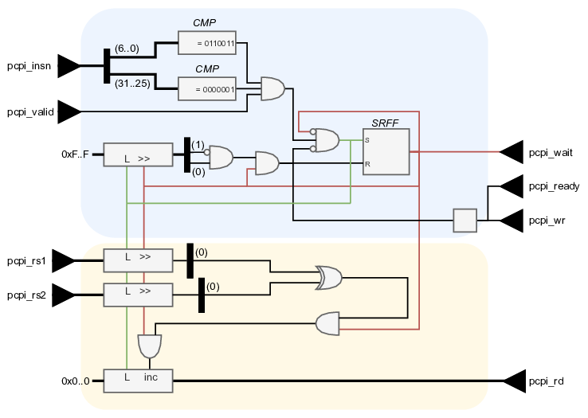

As an example of a custom coprocessor a hardware component is made for calculating the Hamming distance.

The control path is made with a set-reset flipflop. The condition for setting is determined by the pcpi_valid signal and the instruction. Only if the opcode in pcpi_insn is 0110011 and the additional opcode field (funct7) is 0000001, this coprocessor is targeted.
As long as the set-reset-flipflop is turned on, the coprocessor keeps on working. The data width is set to 32 bits, so after 32 iterations the coprocessor needs to be stopped. This is achieved by having a 32-bit register shifting in zeroes. If only a single 1-bit is present in this register, the reset should be set. This guarantees that the set-reset flipflop will be turned off in the next clock cycle.
While the coprocessor is running, the pcpi_wait signal is kept high. When the set-reset flipflop is reset, one clock cycle later (hence the register) the pcpi_ready and pcpi_wr signal should be high, for one clock period.
Upon activation of the coprocessor both operands pcpi_rs1 and pcpi_rs2 are sampled. While the processor is running, these registers shift their values out. The XOR of both least significant bits serves as an increment signal to a counter register. This total count register is cleared upon activation and is written out through the pcpi_rd bus.
For this coprocessor to work, a dedicated instruction needs to be defined. Although this certainly is feasible, it is quite a cumbersome job. The compiler needs to be informed of the new instruction, which requires recompiling the cross-compiler.
One way to cheat our way around this is to reuse an existing instruction. The drawback of this approach is that this existing instruction can no longer be used with its original functionality.
The code below illustrates this cheat by abusing the mul instruction. This was already assumed in the hardware design with parsing the pcpi_insn.
In the C-code, an external function is used. This function has two unsigned integers as parameters and also returns an unsigned integer. As this function is not coded in this file, you need to inform the compiler that this function will be found during linking. This is achieved with the extern keyword.
In the assembly, the hwswcd_hd() function is programmed. As you can see below, the only instruction this function does is the mul with registers a0 and a1 as operands.
Note the line .global hwswcd_hd !! This symbol makes sure that the linker can find this function here.
#include "print.h"
extern unsigned int hwswcd_hd(unsigned int value1, unsigned int value2);
void main(void) {
volatile unsigned int value1, value2, hd;
value1 = 5;
value2 = 9;
hd = hwswcd_hd(value1, value2);
print_str("HD(0x");
print_hex(value1, 2);
print_str(", ");
print_hex(value2, 2);
print_str(") = 0x");
print_hex(hd, 2);
print_str(".");
}
.section .init
.global main
.global hwswcd_hd
start:
/* zero-initialize all registers */
addi x1, zero, 0
addi x2, zero, 0
addi x3, zero, 0
addi x4, zero, 0
addi x5, zero, 0
addi x6, zero, 0
addi x7, zero, 0
addi x8, zero, 0
addi x9, zero, 0
addi x10, zero, 0
addi x11, zero, 0
addi x12, zero, 0
addi x13, zero, 0
addi x14, zero, 0
addi x15, zero, 0
addi x16, zero, 0
addi x17, zero, 0
addi x18, zero, 0
addi x19, zero, 0
addi x20, zero, 0
addi x21, zero, 0
addi x22, zero, 0
addi x23, zero, 0
addi x24, zero, 0
addi x25, zero, 0
addi x26, zero, 0
addi x27, zero, 0
addi x28, zero, 0
addi x29, zero, 0
addi x30, zero, 0
addi x31, zero, 0
/* set stack pointer */
lui sp, %hi(16*1024)
addi sp, sp, %lo(16*1024)
/* call main */
jal ra, main
/* break - trap */
ebreak
hwswcd_hd:
mul a0, a0, a1
ret
You should be able to compile the binary with the code above. Don’t forget to target the RISC-V with the multiply extension (add ’m’) The hardware modifications that need to be made are:
ENABLE_PCPI => '1'ENABLE_MUL => '1'00000000000000000000000001001000 - 072 - 0x48 - H
00000000000000000000000001000100 - 068 - 0x44 - D
00000000000000000000000000101000 - 040 - 0x28 - (
00000000000000000000000000110000 - 048 - 0x30 - 0
00000000000000000000000001111000 - 120 - 0x78 - x
00000000000000000000000000110000 - 048 - 0x30 - 0
00000000000000000000000000110101 - 053 - 0x35 - 5
00000000000000000000000000101100 - 044 - 0x2c - ,
00000000000000000000000000100000 - 032 - 0x20 -
00000000000000000000000000110000 - 048 - 0x30 - 0
00000000000000000000000000111001 - 057 - 0x39 - 9
00000000000000000000000000101001 - 041 - 0x29 - )
00000000000000000000000000100000 - 032 - 0x20 -
00000000000000000000000000111101 - 061 - 0x3d - =
00000000000000000000000000100000 - 032 - 0x20 -
00000000000000000000000000110000 - 048 - 0x30 - 0
00000000000000000000000001111000 - 120 - 0x78 - x
00000000000000000000000000110000 - 048 - 0x30 - 0
00000000000000000000000000110010 - 050 - 0x32 - 2
00000000000000000000000000101110 - 046 - 0x2e - .